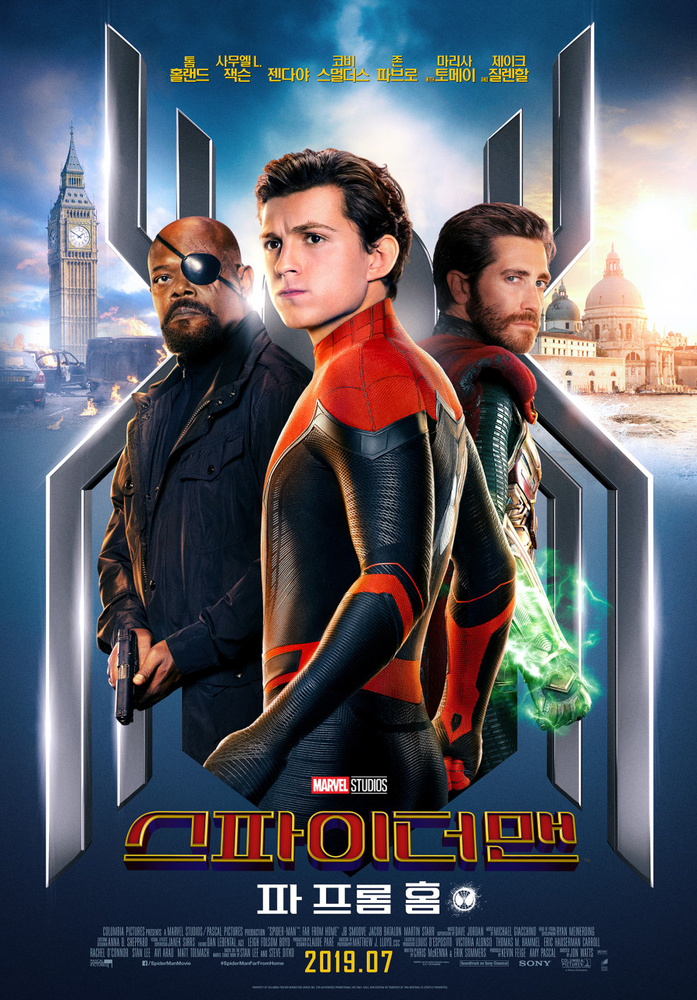

TITLE
스파이더맨: 파 프롬 홈
ORIGINAL TITLE
Spider-Man: Far From Home
GENRE
Action · Adventure · Superhero
MY RATING
★★★★★
My Review
홈커밍을 바로 이어서 감상해서 그런지 피터 파커가 이전보다 조금 더 성장한 모습으로 느껴졌다. 물론 여전히 여행을 가서 좋아하는 여자아이에게 고백하고 싶어 하는 고등학생이지만, 그런 평범한 일상을 보내고 싶어 하는 피터를 계속해서 사건에 휘말리게 하는 상황이 조금 안타깝게 느껴졌다. 미스테리오는 처음 등장했을 때부터 상당히 수상한 인물이라고 생각해 쉽게 믿지는 않았는데, 실제로는 예상했던 것보다 훨씬 악의적인 인물이었다. 특히 환영을 이용해 피터의 정신을 몰아붙이는 장면은 연출이 인상적이었고, 영화에서 가장 기억에 남는 부분 중 하나였다. 또한 피터가 계속해서 토니 스타크의 빈자리를 의식하고 그 역할을 대신해야 한다는 부담을 느끼는 모습도 짠하게 느껴졌다.
.